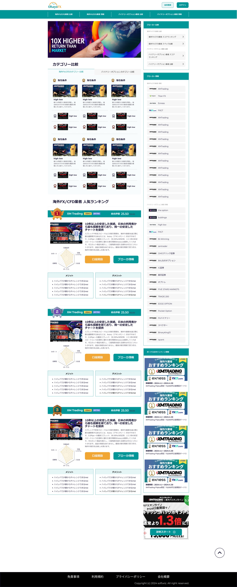
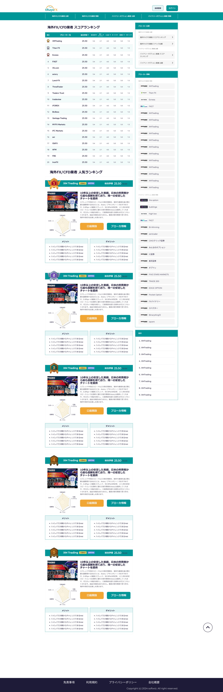
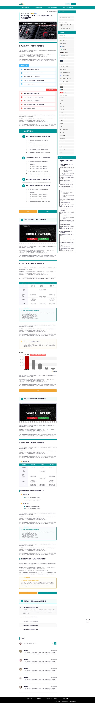

OhayoFX
A Japanese comparison portal for FX and binary-option brokers
- Scope
- Web design
- Role
- UI/UX designer
- Site
- ohayofx.com
- Language
- Japanese

High-fidelity design
Захиалагч тал надаас „Япон style“-аар website-аа хийлгэхийг хүссэн. Миний бие тийм төрлийн design гаргаж үзээгүй ба гол нь миний art style 2024 оны Trend-ыг дагасан илүү өнгөлөг, анхаарал татах чиглэлтэй тул судалгаа маш их шаардсан. Үүнийг би өөртөө шинэ challenge гэж хүлээн авч их хичээсэн :))
Олон өдрийн судалгаа, оролдлогын эцэст захиалагч талын яг хүсэж байгаа загварыг гаргаж чадсан. Чадвартаа ч огт эргэлзээгүй, энэ ажлын ачаар олон төрлийн UI/UX style байдгийг ойлгож чадвараа мэдэгдэхүйц төвшинд ахиулсан.

